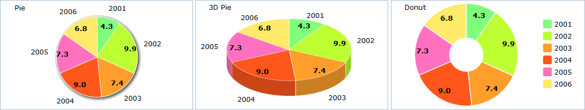

Pie Chart
A Pie Chart is a circular chart divided into sectors, illustrating relative magnitudes or frequencies. The arc length of each sector is proportional to the quantity it represents. Together, the sectors create a full disk.
DHTMLX offers these sub-types of Pie Chart:
- Pie
- 3D Pie
- Donut

Let’s start to create a Pie Chart yourself step by step. You will have possibillity to improve it by adding additional functions and propeties.
In the beginning, make some preparatory steps.
1. Select data of any avaliable format to present in your chart. In our examples we use Sales Information of one little company in json format.
var data = [ { sales:"4.3", year:"2001" ,color:"#80ff7a"}, { sales:"9.9", year:"2002" ,color:"#bdff33"}, { sales:"7.4", year:"2003" ,color:"#ff9e2a"}, { sales:"9.0", year:"2004" ,color:"#ff561b"}, { sales:"7.3", year:"2005" ,color:"#ff71be"}, { sales:"6.8", year:"2006" ,color:"#ffea69"} ];
2. Insert an HTML container to your page for your future chart. For example use name “chart_container”.
<div id=" chart_container" style="width:450px;height:300px;border:1px solid #A4BED4;"></div>
Now, we need to fill in the object constructor. Let's go to know the details.
3. Set the chart type depending on the sub-type you have chosen.
Pie - 'pie',
3D Pie - 'pie3D',
Donut - 'donut'
We will create Pie, so in property 'view' we'll specify value “pie”.
var pieChart = new dhtmlXChart({ view:"pie" .... })
4. Define 'chart_container' in the ‘container’ property to set the chart container.
var pieChart = new dhtmlXChart({ view:"pie", container:"chart_container" ... })
5. Assign '#sales#' to the ‘value’ property to set data that Pie Chart will represent.
var pieChart = new dhtmlXChart({ view: "pie", container: "chart_container", value: "#sales#" ... })
6. Set the pie color. In our example colors of sectors are specified in data structure by the “color” property. Know more about coloring charts here.
var pieChart = new dhtmlXChart({ view: "pie", container: "chart_container", value: "#sales#", color: "#color#" ... })
7. Add legend block definition (parameter 'legend') with the following parameters: 'width','align', 'valign', 'marker', 'template'.
- Set legend block width. e.g. value '65'.
- Choose horizontal alignment for the legend block: “left”, “right” or “center”. We will apply right horizontal alignment.
- Choose vertical alignment: “top”, “bottom” or “middle”. We selected value 'top'.
- Define how coloured markers in legend block will look. In the example we will use the values:'#round#' as marker type and '15' as marker width.
- Specify a template for legend text e.g. value '#year#'.
var pieChart = new dhtmlXChart({ view:"pie", container:"chart_container", value:"#sales#", color: "#color#", legend:{ width: 65, align: "right", valign: "top", marker:{ type: "round", width: 15 }, template: "#year#" } ... })
8. Set inner pie labels (parameter 'pieInnerText') e.g. value '<b>#sales#</b>'.
var pieChart = new dhtmlXChart({ view:"pie", container:"chart_container", value:"#sales#", color: "#color#", legend:{ width: 65, align: "right", valign: "top", marker:{ type: "round", width: 15 }, template: "#year#" }, pieInnerText:"<b>#sales#</b>" })
9. Use method parse() to process data.
pieChart.parse(data,"json");
We've finished. Just run the application to see your creation.
Examples for each sub-type you can see here.